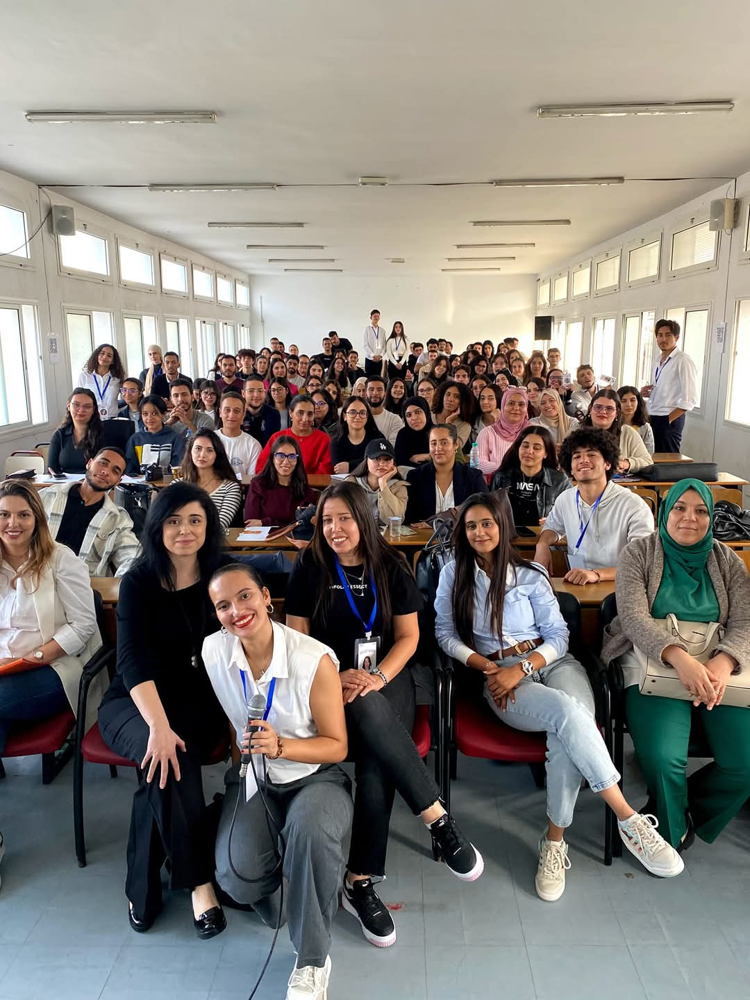
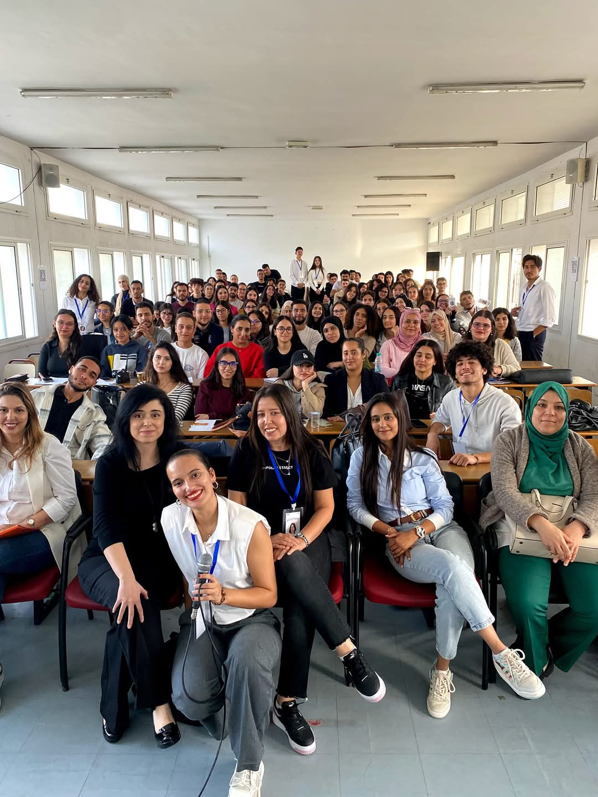

Evénements
Découvrez les événements passionnants organisés par l'ESSECT et participez à nos initiatives enrichissantes.
SME: Semaine Mondiale de l'Entrepreneuriat
Evénement passé
🌟 Rejoignez le PEE-Université de Tunis ! 🌟
ğŸ‰Chers étudiants e s de l' Université de Tunis, le PEE-Université de Tunis vous invite à célébrer🉠la Semaine Mondiale de l'Entrepreneuriat du 18 au 22 Novembre 2024 dans différents établissements de l'Université de tunis.
🟠Le PEEUT, membre des Pôles Étudiants Entrepreneurs d'Afrique du Nord et soutenu par l'AUF - Afrique du Nord, est une initiative de l’Université de Tunis dédiée à :
✅ 𝐒𝐞𝐧𝐬𝐢𝐛𝐢𝐥𝐢𝐬𝐞𝐫 les étudiants à l'entrepreneuriat.
✅ 𝐅𝐨𝐫𝐦𝐞𝐫 à travers des ateliers et programmes adaptés.
✅ ğ€ğœğœğ¨ğ¦ğ©ğšğ ğ§ğğ« dans la concrétisation des projets innovants.
𝐏𝐨𝐮𝐫𝐪𝐮𝐨𝐢 nous 𝐫𝐞𝐣𝐨𝐢𝐧𝐝𝐫𝐞❓
🟠Obtenir le Statut National de l'Étudiant Entrepreneur (SNEE) et profiter de :
-🎓Formations selon un référentiel de compétences pour structurer vos idées.
-🤠Accompagnement personnalisé selon votre projet.
-🏢Ressources dédiées : incubateurs, espaces de travail.
-💰Soutien pour la recherche de financement pour vos projets.
En savoir plus


Réussir mon PFE : Votre guide vers l'excellence académique !
Evénement passé
🌟Organisé par le club InfoLab ESSECT 📅 le 23 novembre 2024, cet événement a été spécialement conçu pour accompagner les étudiants dans la réalisation de leur Projet de Fin d’Études (PFE).
Pourquoi participer à cet événement â“
Préparez-vous à transformer votre PFE en un véritable succès grâce à des ateliers pratiques, des conseils de professionnels et des retours d’expérience d’étudiants.
🌟 Au programme :
- Conférences inspirantes : Des experts académiques et professionnels partageront leurs conseils pour choisir un sujet pertinent, structurer un mémoire, et gérer efficacement votre temps.
- Ateliers pratiques : Apprenez à utiliser des outils numériques (comme LaTeX, Scrum et autres logiciels de modélisation) pour mieux présenter vos résultats.
- Networking : Échangez avec des encadrants et des étudiants de différentes disciplines pour enrichir votre vision.
📠Repartez avec un kit de ressources PFE, incluant des templates de rapports, des outils pour organiser vos idées et des astuces pour réussir vos présentations.
Découvrez les erreurs courantes à éviter et les bonnes pratiques pour maximiser votre impact auprès du jury.
🤠Votre PFE n'est pas qu'une simple formalité : c’est une opportunité de mettre en valeur vos compétences et de marquer les esprits. Avec "Réussir mon PFE", mettez toutes les chances de votre côté pour décrocher une note exceptionnelle et impressionner vos futurs recruteurs.
En savoir plus

 

🯠LinkedIn Conference - Optimisez votre carrière digitale !
Evénement passé
Organisé par InfoLab ESSECT, cet événement vous aide à maîtriser
LinkedIn, l’outil indispensable pour votre réussite professionnelle.
💼 Pourquoi participer ?
- 📋 Apprenez à créer un profil irréprochable, qui attire l’attention des recruteurs.
- 🌠Découvrez les secrets pour développer un réseau puissant et interactif.
- 📊 Maîtrisez les algorithmes de LinkedIn pour augmenter la visibilité de vos posts.
ğŸ› ï¸ Programme de l'événement :
- 🔠Atelier pratique : Analyse et optimisation de votre profil.
- 🤠Stratégies de networking : Comment se connecter efficacement.
- 🎙️ Conférence : Des experts partagent leurs astuces LinkedIn.
✨ Les plus :
- 📑 Repartez avec un guide exclusif : "10 clés pour briller sur LinkedIn".
- 🚀 Profitez de conseils personnalisés sur votre profil.
- 🌟 Boostez vos chances d’emploi grâce à un profil optimisé.
Evénements à venir
Découvrez les événements passionnants organisés par l'ESSECT et participez à nos initiatives enrichissantes.
📊 Workshop : Data Science pour tous
📢 Découvrez le monde fascinant de la Data Science grâce à cet atelier pratique animé par des experts en intelligence artificielle !
🌟 Ce que vous apprendrez :
- 🔢 Les bases de la Data Science et son importance aujourd'hui.
- 🐍 Une introduction à Python et ses bibliothèques (Pandas, NumPy).
- 📈 Analyse de données en direct : Appliquez vos connaissances sur des cas pratiques.
ğŸ› ï¸ Atelier interactif :
- 🔠Exploration de datasets réels.
- 💻 Manipulation des données avec Python.
- 📊 Création de visualisations graphiques captivantes.
📅 Date et lieu :
10/01/2025
Salle de conférence, ESSECT.
🔗 Inscrivez-vous maintenant et faites vos premiers pas dans la Data Science !
En savoir plus🤖 Conférence : L’Intelligence Artificielle - Mythe ou réalité ?
🎙️ Une conférence captivante sur les opportunités et les défis de l’IA, animée par des experts reconnus du secteur technologique.
🌟 Thèmes abordés :
- 🌠Comment l'IA change notre vie quotidienne ?
- 📊 Les implications éthiques et sociétales de l’IA.
- 🚀 L’avenir des emplois dans un monde dominé par l’IA.
✨ Les plus :
- 📠Apprenez de professionnels issus d’entreprises de renom.
- 💡 Posez vos questions et échangez avec les intervenants.
- 🌟 Réseautez avec d'autres étudiants passionnés par la tech.
📅 Date et lieu :
23/12/2024
Amphithéâtre1, ESSECT.
🔗 Réservez votre place et plongez dans le monde fascinant de l'IA.